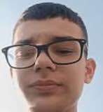
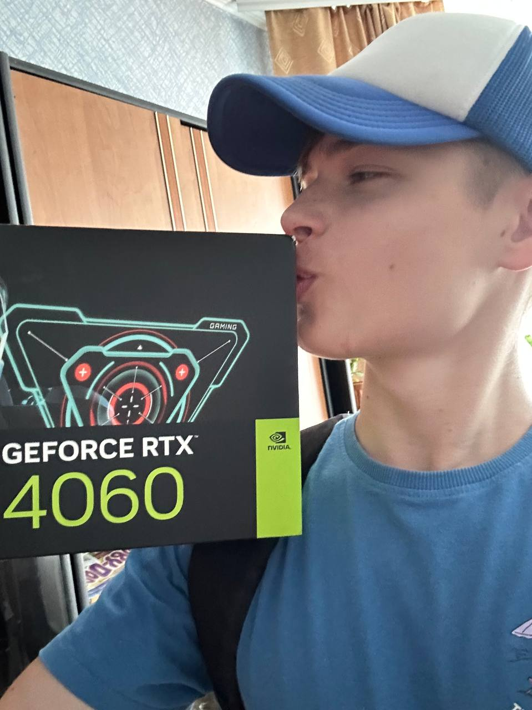
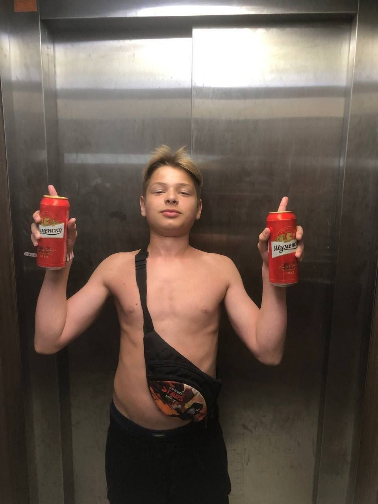
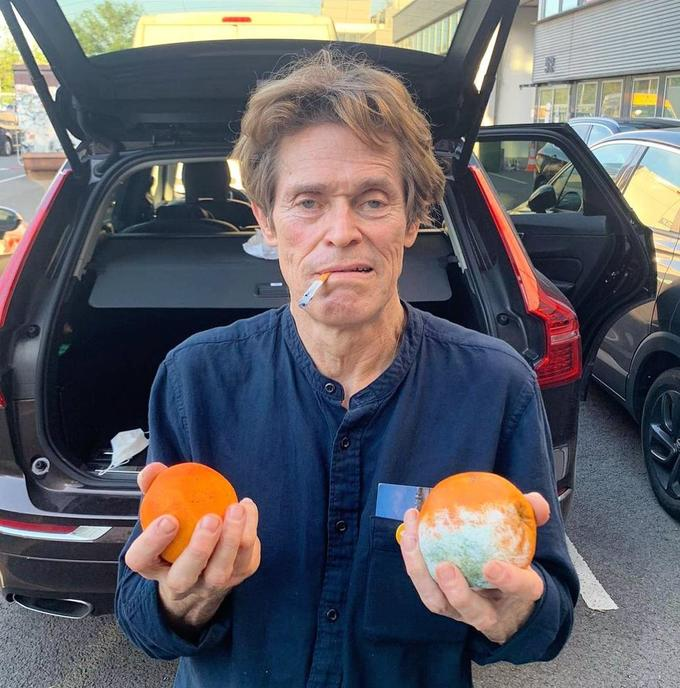

Тащілов Микита - один із найяскравіших учнів 46-Т групи. Він відомий своїм вмінням використовувати інструменти ШІ, вміннями в програмуванні. Вже в 10 класі створив сенсаційний сайт перегляду усіх можливих кінострічок від найвідоміших, так і до менш популярних. Також Микита має досвід тімліда, бо підтримав команду у не найлегші часи з та зміг створити разом з нею чудовий проєкт Морський бій, у якому він зміг реалізувати навіть мережеву гру
Всі однокласники відгукуються дуже позитивно про Микиту. Нам вдалося зв'затись з його колишнім однокласником, Владиславом
Ми з Микитою ще з малєтства разом вчилися, і я вам клянусь — такова чєсного і чоткого кориша в мене зроду не було. Ми з ним вообще як вода з милом, хвіст із собакою, капець які нерозлучні були! Людина — чисто ржака, юмор шпарить тільки так, а соображалка працює — дай боже каждому. У нас в колхозі таких кадрів відродясь не водилося!

Нещодавно "Джонні" похизувався покупкою нового обладнання для дослідницьких робіт в сфері нейромережей. Ось що пише сам Микита:
Тяжко працювавши, я зміг зібрати кошти та купити собі нову відеокарту. Я планую з її допомогою написати свій продвинутий ШІ, що зможе більш еффективно виконувати поставлені задачі з різноманітних предметів: від математики, до івриту.

Також до п'ятиріччя фільму "Маяк", Тащілов Микита погодився організувати фотосесію з Вільямом Дефо

